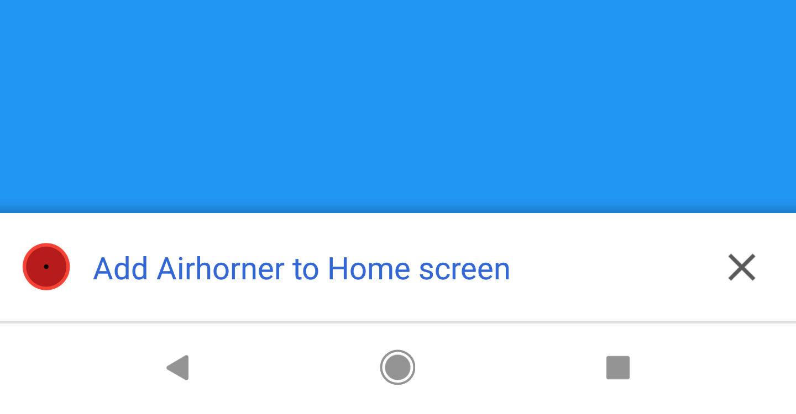

Диалоги установки приложения.
Существуют два типа диалогов установки иконки приложения: WEB диалог для веб приложения, NATIVE диалог установки нативного приложения. Они позволяют пользователю быстро добавить иконку на веб или native приложения на домашний экран устройства без выхода из браузера. Технология установочного диалога иногда имеет аббревиатуру A2HS.
Для возможности добавления установочного диалога, необходимо в приложение добавить файл манифеста, с заполненными метаданными свойств приложения. Затем, Chrome использует данные свойства для отображения диалога перед добавлением приложения на домашний экран. Ниже, интерфейсы установочных диалогов для различных модификаци Chrome и способов вызова:
A2HS баннер
до Chrome 68

Отображается автоматически, если сайт удовлетворяет критериям (условиям) автоматического отображения данного диалога и сайт не вызывает метод preventDefault() объекта события beforeinstallprompt
или
Отображается при вызове метода prompt() объекта события beforeinstallprompt.
Mini-infobar
Chrome68 и выше

Отображается, когда сайт удовлетворяет условиям автоматического отображения. При отклонении установки пользователем не будет отображаться для этого домена около трех месяцев.
Отображается вне зависимости вызова метода preventDefault() объекта события beforeinstallprompt. Этот пользовательский интерфейс установки приложения на экран устройства будет удален, когда будет реализован интерфейс добавления приложения при помощи кнопки рядом со строкой адреса.
A2HS Диалог
Отображается при вызове метода prompt() объекта события beforeinstallprompt
или
Отображается, когда пользователь кликает на mini-infobar
или
Отображается после нажатие на элемента Добавить на домашний экран из меню хрома во всех версиях Chrome.
Установка на домашний экран (тип WEB).
Chrome автоматически запускает событие beforinstallprompt, когда приложение отвечает следующим критериям :
- Веб приложение еще не установлено.
- Пользователь взаимодействовал с доменом сайта не менее 30 секунд.
- Файл манифеста имеет заполненными следущие свойствами:
- short_name или name - используется как имя приложения на домашнем экране.
- В массиве icons должны быть определены иконки со свойствами "sizes" : "192x192" и 512x512
- start_url
- display - должно содержать одно из следующих значений fullscreen, standalone, minimal-ui
- Имеет зарегистрированный Service Worker (сервисный рабочий)
- Работает по протоколу HTTPS (обязательно для использования сервисного рабочего)
Другие браузеры (отличные от Chrome) могут иметь свои критерии для запуска события. Проверяйте соответствующую документацию для браузеров Edge, Firefox, Opera, Samsung, US Browser.
Если манифест приложения включает свойства related_applications и prefer_related_applications : true, то будет отображена подсказка установки иконки приложения на экран типа native.
Начиная с версии Chrome 68 (бета в июле 2018), Chrome автоматически не отображает диалог установки на домашний экран. Для его отображения вызовите метод prompt() в событии beforeinstallprompt. Подробнее...
Технология диалогов установки развивающаяся, поэтому критерии для применения этих диалогов могут меняться в будущем.
Отображение диалога установки иконки приложения на экран устройства.
Для отображения диалога установки, разработчику нужно:
- Подписаться на событие beforinstallprompt.
- Оповестить пользователя о том, что ваше приложение может быть установлено при нажатии на кнопку или другого элемента, генерирующего событие пользовательского жеста.
- Отобразить диалог, вызвав метод prompt() на объекте события, полученного в параметре обработчика.
Подписка на событие beforeinstallprompt.
Если критерии добавления иконки на экран устройства присутствуют, Chrome запустит событие beforeinstallprompt, которое используется для определения возможности установки иконки приложения на экран устройства и вывода диалога принятия решения об установки. Когда это событие активируется, объект события, полученный в параметре обработчика сохраняется, а пользователю отображается интерфейс принятия решения.
//Объявление переменной в которой сохраним ссылку объекта события
let deferredPrompt;
window.addEventListener('beforeinstallprompt', (e) => {
//Предотвращаем автоматическое отображения диалога
e.preventDefault();
//Сохраняем ссылку на объект события для доступа к нему позже
deferredPrompt = e;
});
Оповещение пользователя о возможности установить приложение.
Наилудший способ оповестить пользователя о возможности установки приложения - добавить кнопку или иной элемент в пользовательский интерфейс. Не отображайте полностраничное оповещение или элементы, которые могут надоедать или назойливо отвлекать. В некоторых случаях можно сделать паузу перед отображением оповещения, чтобы грубо не прерывать работу пользователя. К примеру, если пользователь находиться в процессе проверке чего-либо или заполняет какую либо форму, или создает аккаунт. Позвольте ему завершить начатое.
window.addEventListener('beforeinstallprompt' , (e) =>{
e.preventDefault();
deferredPrompt = e;
//Отобразить пользовательский интерфейс оповещения
btnAdd.style.display = 'block';
} );
Метод вызова диалога установки.
Что бы диалог установки отобразился, необходимо вызвать метод prompt() на предварительно сохраненном объекте события. Отобразиться модальное окно, запрашивающее пользователя о добавлении иконку приложения на рабочий экран. Вызов данного метода может выполниться только один раз, и если пользователь его отклонит, нужно будет подождать, пока событие beforeinstallprompt не активизируется снова при следующей навигации на страницу приложения.
btnAdd.addEventListener('click', (e) => {
//Скрываем интерфейс уведомления возможности установки приложения
btnAdd.style.display = 'none';
// Отображаем диалог установки приложения
deferredPrompt.prompt();
//Ждем активации этого диалога пользователем
deferredPrompt.userChoice.then((choiceResult) => {
//Если решение положительное
if (choiceResult.outcome === 'accepted') {
console.log('Пользователь решил установить приложение');
} else {
console.log('Пользователь отказался от установки приложения');
}
deferredPrompt = null;
});
});
Определение удачной установки приложения
Для определения удачной установки иконки приложения после принятия положительного решения в диалоге, необходимо подписаться на событие глобального контекста appinstalled.
window.addEventListener('appinstalled', (evt) => {
console.log('installed');
});
Определение запуска приложения с экрана устройства
display-mode - медиа запрос в котором определяются стили в зависимости от того в каком режиме запущено приложение. Возможно применение в файлах CSS, JavaScript. К примеру, для применения различных стелей фона приложения применяется условие медиазапроса, проверяющее запус приложения в режиме отдельного приложения.
@media all and (display-mode: standalone) {
body{
background-color : yellow;
}
}
Тот же пример определения режима, но уже в javaScript файле.
if (window.matchMedia('(display-mode: standalone)').matches) {
console.log('Режим запуска автономный');
}
Для определения режима запуска приложения в браузере Safari, используется проверка в javascript:
if (window.navigator.standalone === true) {
console.log('Режим запуска автономный');
}
Обновление иконок и имени приложения
Если разработчик изменил значения свойств в файле манифеста, изменения вступят в силу после того как пользователь перезапустит приложение.
Тестирование добавления иконки на экран устройства.
Можно вручную запустить событие beforeinstallprompt при помощи интструмента разработчика в Chrome (Dev Tool). Это делает возможным отследить пользовательский опыт, понять логику работы потока и его регулировку. Если приложение не соответствует критериям прогрессивных веб приложений, в консоль будет вброшено исключение и событие не запустится.
Chrome имеет немного различные реализации потока установки в мобильных и настольных браузерах, однако, инструкции похожи, кроме того, что тестирование на мобильном браузере требует удаленной отладки, без которой, будет применяться установочный поток настольного браузера.
Chrome на Android
- Открыть сессию удаленной отладки на телефоне или планшете
- Перейти в панель Application
- Перейти в закладку Manifest
- Нажать на Add to home screen (добавить на домашний экран).
Chrome OS
- Открыть Chrome Dev Tools (инструменты разработчика)
- Перейти в панель Application (приложение).
- Перейти в закладку Manifest
- Нажать на Add to home screen (добавить на домашний экран).
Самый простой способ протестировать запуск события beforeinstallprompt - это использовать инструмент Lighthouse для полного аудита приложения и проверки его результатов его теста User Can Be Prompted To Install The Web App (пользователь может быть оповещен об установки приложения).
Диалоги установки нативных приложений.
Такие диалоги дают возможность пользователям быстро и гладко устанавливань нативные приложения на устройства из хранилища приложений (app store), без необходимости покидания браузера.
Условия отображения диалога.
Chrome автоматически отобразит диалог пользователю, когда приложение будет соответствовать следующим условиям, похожим на условия для WEB приложений:
- Приложение еще не установлено на устройство.
- Пользователь проявляет активность на странице приложения более 30 секунд.
- В манифесте приложения установлены следующие свойства:
- short_name
- name (используется в тексте диалога)
- icons - имеет значения для 192px и 512px пиксельных иконок
- prefer_related_applications - установлена в истину (true)
- related_applications - значение объекта содержит информацию о приложении.
- Развернуто на сервере по безопасному протоколу HTTPS
Если сайт имеет ограничительную Content Security Policy, убедитесь в добавлении к директиван img-src дополнительного идентификатора *.googleusercontent.com, для того чтобы Chrome мог загрузить иконку ассоциированную с вашим приложением из Play Store.
Обязательные свойства манифеста.
Что бы подсказать пользователю установить приложение, нужно добавить два свойства в файл манифеста prefer_related_applications и related_applications
"prefer_related_applications" : true,
"related_applications" : [
{
"platform" : "play",
"id": "com.google.samples.apps.iosched"
}
]
prefer_related_applications - это свойство указывает браузеру вывести диалог пользователю для установки нативного приложения, вместо веб приложения. Устанавливая это свойство в значение ложь, или не устанавливая его, заставит браузер установить веб приложение.
related_applications - массив со списком объектов, которые содержат информацию о нативном приложении. Каждый объект должен включать свойство platform - имя платформы и id - идентификатор приложения в этой платформе.